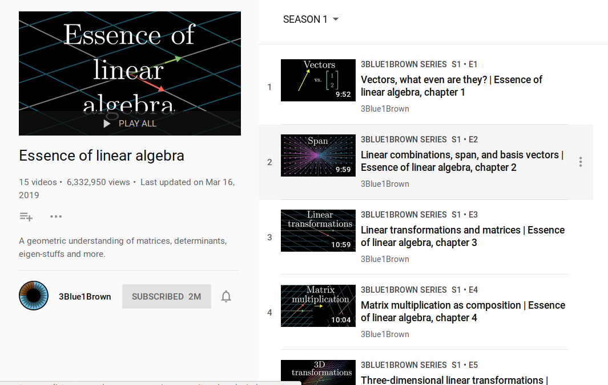
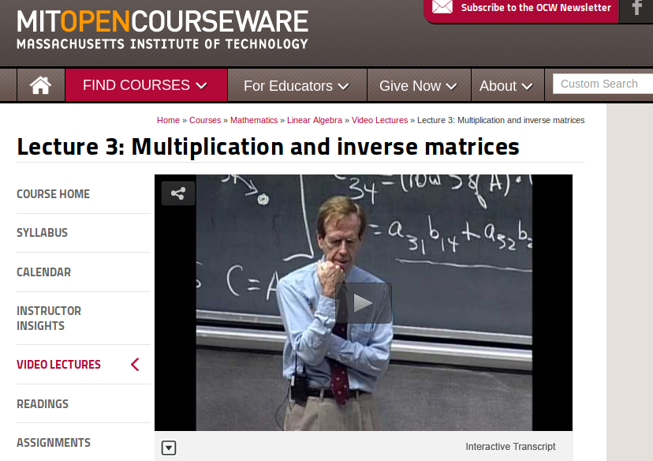

Linear Algebra for Data Scientists
If you're a data scientist studying linear algebra, chances are you are interested in understanding how machine learning algorithms work. Neural networks rely on it heavily, but so do linear regression, factor analysis, and lots of other methods.
The generous professionals of the Internet shared their favorite linear algebra resources on LinkedIn and Twitter. There are a lot of great recommendations here, and I recommend you scroll through them if you'd like to go deeper into the topic and catch it from multiple angles. However, a couple of clear winners emerged.
3Blue1Brown, a.k.a. Grant Sanderson
Two million YouTube subscribers (to a math channel!) can't be wrong. Linear algebra concepts lend themselves to illustration, and the beautiful graphics in these videos exploit this fully. All the scary terms are explained in straightforward words and animations. This is a fantastic place to start, partciularly if you have a touch of anxiety about the topic.
My first exposure to linear algebra was not gentle. It consisted entirely of theorems, proofs, and intimidating words. It was quite some time after that first course before I started to build an intuition for the concepts. 3Blue1Brown is the preparation I wish I'd had then.
By the way, if you find the 3Blue1Brown series helpful, do youself a favor and support the work. Grant relies on viewer contributions to support his work. By donating you will be giving life blood to unique and inspired educator, as well as accumulating good karma for yourself.
Gilbert Strang
Professor Strang's lectures for MIT's undergraduate linear algebra course (18.06) are a crowd favorite. He keeps the material grounded in computation and application, suiting it well for the curious data scientist. Professor Strang's mastery is unquestionable, his ability to break down abstract ideas into concrete examples is rare, and his passion for the subject is like nothing I've ever seen.
This video series is particularly meaningful to me since it was recorded in 1999, right when I was taking the course from him. I wasn't in this particular section. I definitely was not the guy napping in the eighth row. But the insights I got during that semester and Professor Strang's infectious enthusiasm are still fresh.